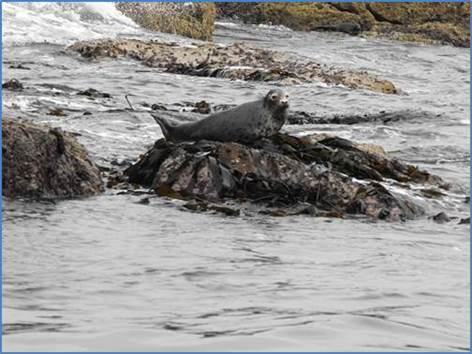

|
|
OUTGROVE PARK RAMBLERS |
HOME
|
WILDLIFE |
|||
|
The
Pembrokeshire Coast National Park has a varied habitat, which supports a
large number of species. As well as the greater horseshoe bat, there is
a wide range of birds in the area including the barn owl and choughs.
Ramsey Island and Skomer Islands, just off the coast, have large grey
seal colonies and gannets, storm petrel and puffins. There are also many
species of rare flowers. |
 |
|||